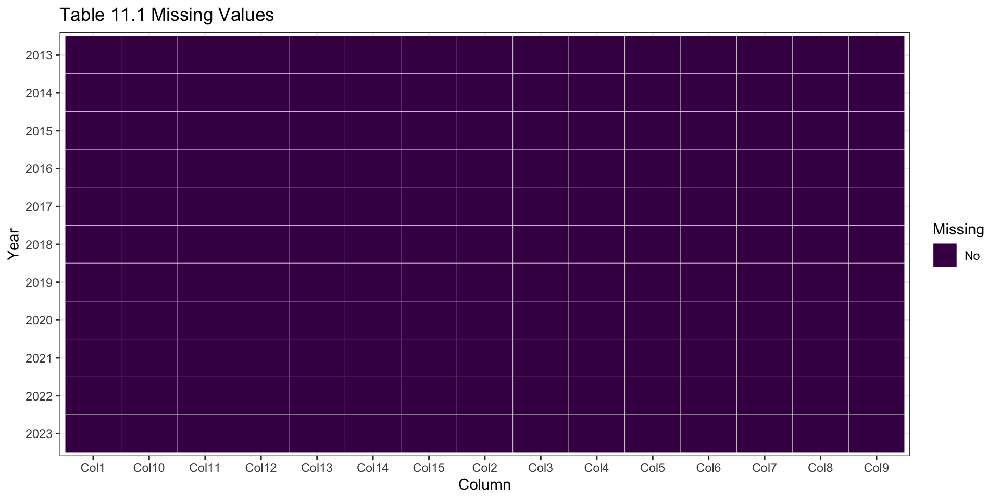
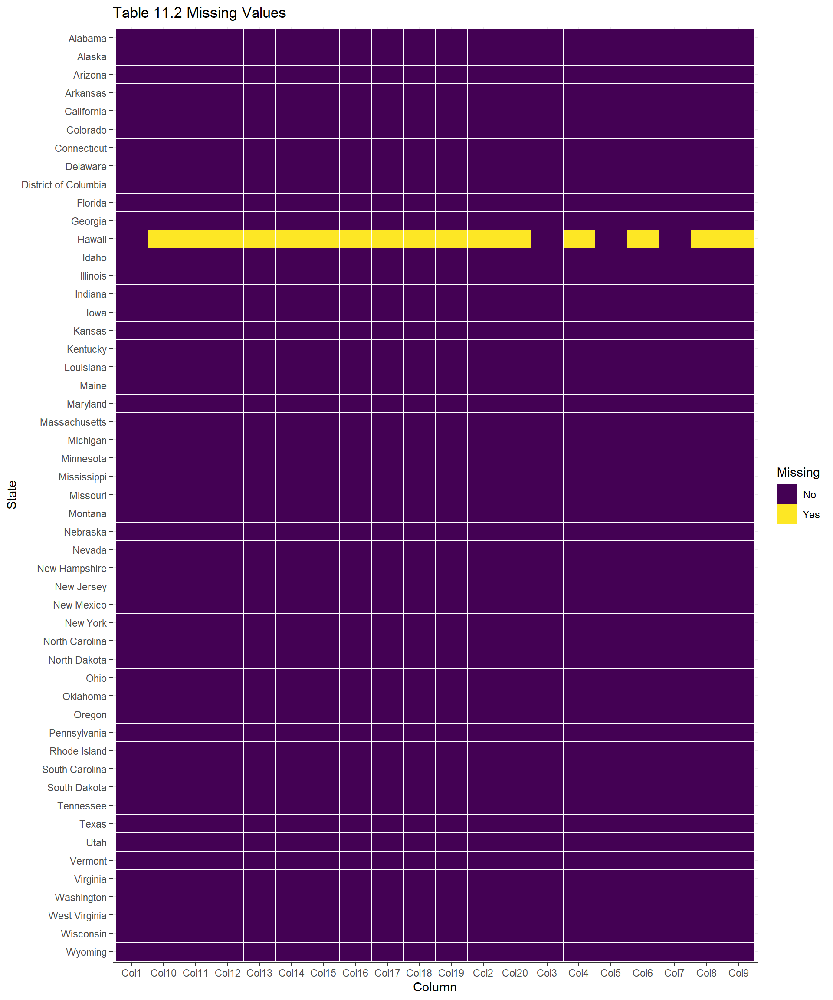
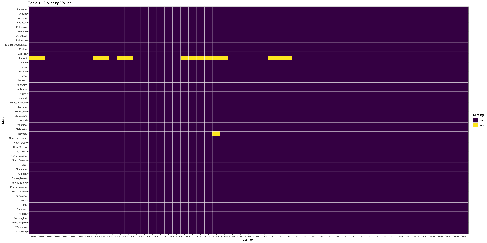

Code
suppressPackageStartupMessages(library(ggplot2))
suppressPackageStartupMessages(library(dplyr))
suppressPackageStartupMessages(library(tidyverse))
suppressPackageStartupMessages(library(readr))We will be using datasets from the U.S. Energy Information Administration (EIA), an agency within the U.S. Department of Energy. The role of the agency is to collect, analyze, and provide access to energy information to the public, industry stakeholders, and policymakers. EIA data is collected through monitoring systems, surveys, and collaboration with industry, state, and federal agencies.
We will be using 3 different tables posted on the EIA website with data presented in HTML table format that contains grid reliability metrics of the U.S. Distribution system. These tables are updated annually with the latest data available through 2023. These tables include the following:
The data is sourced from the EIA’s Form EIA-861, Annual Electric Power Industry Report.
We will also be using an Excel spreadsheet (.xlsx) containing the EIA-860 Annual Electric Generator report. This dataset is also updated annually with the latest release on September 23, 2024, which contains data through 2023. The dataset includes the following:
Reliability Metrics of U.S. Distribution System (EIA-861):
EIA-860 Annual Electric Generator Report:
suppressPackageStartupMessages(library(ggplot2))
suppressPackageStartupMessages(library(dplyr))
suppressPackageStartupMessages(library(tidyverse))
suppressPackageStartupMessages(library(readr))data1 <- read_csv('Table1.csv', show_col_types = FALSE)
data2 <- read_csv('Table2.csv', show_col_types = FALSE)
data4 <- read_csv('Table4.csv', show_col_types = FALSE)data1_plot <- data1 |>
pivot_longer(cols = -Year) |>
mutate(Missing = ifelse(is.na(value), 'Yes', 'No')) |>
mutate(Year = as.character(Year))
data2_plot <- data2 |>
pivot_longer(cols = -State) |>
mutate(Missing = ifelse(is.na(value), 'Yes', 'No'))
data4_plot <- data4 |>
pivot_longer(cols = -State) |>
mutate(Missing = ifelse(is.na(value), 'Yes', 'No'))ggplot(data1_plot, aes(x = name, y = fct_rev(Year), fill = Missing)) +
geom_tile(color = 'white') +
scale_fill_viridis_d() +
labs(title = 'Table 11.1 Missing Values',
x = 'Column',
y = 'Year') +
theme_bw()
Table 11.1 contains “Reliability Metrics of U.S. Distribution System” by year from 2013 to 2023 for multiple reliability metrics and 2 calculation methods. There are no missing values in this table.
ggplot(data2_plot, aes(x = name, y = fct_rev(State), fill = Missing)) +
geom_tile(color = 'white') +
scale_fill_viridis_d() +
labs(title = 'Table 11.2 Missing Values',
x = 'Column',
y = 'State') +
theme_bw()
Table 11.2 contains “Reliability Metrics Using IEEE of U.S. Distribution System by State” by year for 2022 to 2023 for multiple reliability metrics. The state of Hawaii is missing values for many of these reliability metrics. Hawaii’s grid operates very differently to other states’ grids so we will choose to exclude Hawaii in our analysis, and rather focus on the continental United States (all states excluding Hawaii). All other states have no missing data in this table.
ggplot(data4_plot, aes(x = name, y = fct_rev(State), fill = Missing)) +
geom_tile(color = 'white') +
scale_fill_viridis_d() +
labs(title = 'Table 11.2 Missing Values',
x = 'Column',
y = 'State') +
theme_bw()
Table 11.4 contains “SAIDI Values (Minutes Per Year) of U.S. Distribution System by State, 2013 - 2023” (SAIDI is one specific reliability metric). The state of Hawaii is again missing values for many years of data.We will again choose to exclude Hawaii in our analysis, and rather focus on the continental United States (all states excluding Hawaii). Nevada is missing data for the SAIDI value calculated with “Loss of Supply Removed” in 2014. We are planning on using SAIDI metrics that include “All Events” rather than the “Loss of Supply Removed”, so this missing value does not cause any issues. All other states have no missing data in this table.